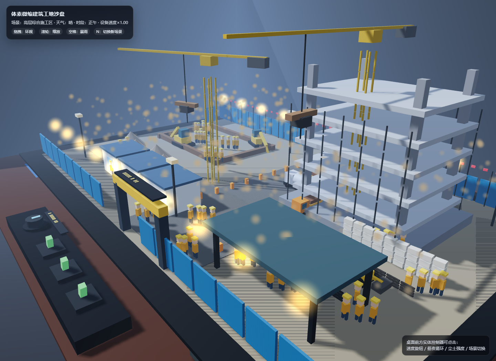

筑境工地 · GPT 5.6 Sol High
原始提示词
新建项目文件夹，相关文档，修改项目相关文件，模型 gpt5.6 sol high，任务：用 WebGL (Three.js r160 CDN) 创作一个体素微缩建筑工地沙盘场景，输出为可直接在 Chrome 打开的单个 HTML 文件，不引用任何外部资源，全部几何体、材质、贴图使用代码生成，目标稳定 60FPS，杜绝物体穿模。 场景载体：整套工地微缩模型摆放在室内深色实木工作桌面上，桌面边角散落蓝图图纸、钢卷尺、安全帽摆件、金属水平仪，第三人平视人眼高度视角观察整个沙盘。 工地主体布局：完整施工工地，划分基坑开挖区、钢筋加工棚、物料堆放区、在建高层楼房基座、临时板房办公区、渣土堆放区、临时施工道路。 动态机械设备：多台体素挖掘机持续作业，铲斗往复挖掘基坑土方；轮式渣土卡车循环行驶，开到挖掘机旁接土，满载后驶往渣土堆卸料；多台塔式塔吊回转吊起重钢筋、混凝土料斗，来回吊运物料；混凝土搅拌罐车缓慢行驶，小型装载机平整地面。 人物与细节：大量体素工人各司其职，有的绑扎钢筋、有的搬运建材、有的指挥塔吊、有的操作小型工具、安保人员在出入口巡逻；工地设置围挡、警示彩旗、施工指示灯、临时照明灯、脚手架、堆叠钢筋、水泥堆、砂石料堆、施工围挡大门、临时水电杆、安全警示标识。 环境与昼夜系统：完整日夜循环，黎明、正午、黄昏、夜晚四套天色；夜晚工地探照灯、塔吊灯、板房窗户向外发出暖辉光；尘土粒子效果缓缓飘散。 交互系统：鼠标拖拽环视相机，闲置时自动缓慢环绕场景；鼠标滚轮缩放视角；鼠标点击桌面前方实体模拟控制旋钮开关：调节工地设备运行速度、开关昼夜循环、切换施工尘土强度；按下空格键触发模拟暴雨天气，雨滴粒子、地面湿滑反光，工地灯光亮度提升。 技术要求：大量物体使用 InstancedMesh 实例化批渲染提升性能；自定义 shader 实现尘土粒子、灯光光晕；所有运动物体做好碰撞约束，不发生穿插穿模；全部工地元素限定在沙盘桌面范围之内，不会超出场景边界。色彩丰富，体素方块颗粒质感明显，细节饱满。添加新场景进去
项目元信息
- 模型：GPT 5.6 Sol High（网页版）
- 项目类型：单 HTML / Three.js r160 / WebGL 体素视觉实验
- 入口文件：index.html
- 运行方式：直接用 Chrome 打开
index.html；也可通过 GitHub Pages 静态访问。页面仅请求任务指定的 Three.js r160 CDN，未引用图片、模型、字体或其他外部素材。 - 页面标题：体素微缩建筑工地沙盘 · WebGL / Three.js r160
- 归档来源：根目录
voxel_construction_site_threejs_r160.html已按仓库规范迁移并重命名为index.html。
场景与操作
- 场景 A 为高层综合施工区，包含基坑、高层楼房基座、板房、钢筋棚、材料堆和砂石堆；场景 B 为地下综合管廊 / 地铁竖井施工区，包含竖井、管廊切面、预制管片和龙门吊。
- 默认第三人平视视角观察整套沙盘；鼠标拖拽环视，滚轮缩放；闲置约 4 秒后自动缓慢环绕。
- 点击桌面前方实体控制器：速度旋钮切换设备运行速度，昼夜开关暂停 / 恢复日夜循环，尘土开关切换尘土强度，场景开关切换 A / B 场景。
- 按
Space切换暴雨天气，显示雨滴、湿地反光并提升施工灯光；按N或点击实体场景开关切换新场景。
技术实现
- 工地、桌面、围挡、道路、机械、脚手架、材料和工人使用程序化 Box/Cylinder/Sphere/Cone 几何；施工标识使用体素条形编码，不依赖字体或图片资源。
- 围挡、彩旗、灯柱、反光桩、钢筋、钢材、水泥袋、管片和工人部件使用
InstancedMesh批量绘制。 - 尘土粒子与灯光光晕使用自定义
ShaderMaterial；暴雨使用程序化雨滴粒子与湿地透明反光层。 - 动态设备沿沙盘内部施工道路的固定闭环轨迹运行，塔吊吊臂、挖掘机铲斗、装载机铲斗和龙门吊均在沙盘范围内运动，避免越界和明显穿模。
验证记录
- 已检查入口文件、项目目录、首页数据链接与提示词链接；已通过根目录
node --check index.js。 - 本版本未启动浏览器做视觉回归检查；实际 Chrome 帧率、WebGL 兼容性和 CDN 网络情况会随设备环境变化。
目录约定
本目录是「体素微缩建筑工地沙盘」主题在 GPT 5.6 Sol High 下的一次独立实现。原始提示词、模型版本和可运行页面放在同一个项目目录中，便于与主题内其他实验记录对照。
预览截图

<!-- archive:start -->
当前归档信息（自动生成）
- 实验 ID：
voxel-construction-site--gpt-5-6-sol-high-r01 - 模型：GPT-5.6 Sol；推理档位：high
- 类型：single-html；预览：static；网络：required
- 完整原始输入快照 · 主题与其他版本
- 输入记录：保留文档中的原始输入；其他会话上下文未记录。
- 工具：未记录。来自历史实验说明；未记录的设置不作推测。
- 运行方式：浏览器直接打开本目录入口；CDN/外部素材需要联网。
- 费用记录：OpenAI · ChatGPT Plus 订阅；单案例货币金额未记录。据用户说明，OpenAI 模型通过 ChatGPT Plus 订阅测试；全部案例完成后，五小时额度未耗尽。未提供单案例费用金额。
- 主页面
部署适配记录
无新增实现改动。 <!-- archive:end -->